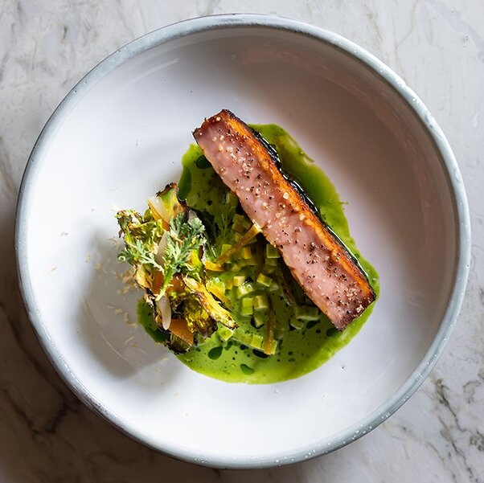

L'éthique
Le Millésime incarne l'essence du luxe à travers une philosophie centrée sur l'excellence culinaire et la pureté des ingrédients. Chaque plat est une célébration du goût, préparé avec des produits frais, locaux et d'une qualité irréprochable. Nous sélectionnons avec soin les meilleurs ingrédients de saison, en privilégiant l'artisanat et le savoir-faire des producteurs. L'élégance de nos assiettes reflète notre engagement à offrir une expérience gastronomique unique, où chaque détail compte.
Notre chef
Le chef Gustavo, originaire du Brésil, a forgé son talent dans plusieurs restaurants étoilés à travers le monde. Inspiré par les saveurs de son pays natal, il a perfectionné son art en Europe et en Amérique du Nord, mêlant tradition et innovation. Sa cuisine, marquée par des ingrédients de qualité et des influences internationales, reflète son souci du détail et sa passion pour l’excellence. Gustavo allie savoir-faire et créativité pour offrir une expérience culinaire unique.
L'équipe
Le sous-chef Timothé est un talent prometteur, formé dans des écoles culinaires internationales de renom. Avec plusieurs années d’expérience dans des restaurants étoilés, il apporte une expertise technique solide et un flair créatif. Sa rigueur et son attention aux détails complètent parfaitement la vision gastronomique du chef, contribuant à chaque plat avec passion et précision.
Le chef pâtissier Lassana, fort de son expérience dans des cuisines internationales, est un véritable artisan du sucré. Sa passion pour la pâtisserie se reflète dans chaque création, où précision et innovation se mêlent harmonieusement. Lassana excelle à transformer des ingrédients simples en desserts raffinés, offrant des expériences gustatives inoubliables à chaque bouchée.
Karim, notre maître de salle, apporte une expertise internationale acquise dans certains des meilleurs restaurants du monde. Son sens du service, son élégance et son attention aux moindres détails assurent à chaque client une expérience raffinée et inoubliable. Avec Karim, l'hospitalité devient un art, sublimant chaque moment passé dans notre établissement.
La carte
Reflet de notre engagement envers la qualité et l'authenticité. Nous sélectionnons des ingrédients frais et de saison, issus de producteurs locaux, afin de garantir des saveurs riches et authentiques. Nous privilégions également la durabilité en intégrant des options végétariennes et respectueuses de l'environnement, pour satisfaire les palais de tous nos convives tout en préservant notre planète.
Le lieu impose son élégance Grand Siècle. Un décor au raffinement classique teinté de touches contemporaines.
“ La nourriture est un langage universel qui relie les âmes. “
Chef Gustavo
Nos millésimes
Notre sélection de vins est soigneusement élaborée pour compléter à la perfection chaque plat de notre menu. Nous mettons en avant des vins provenant de domaines réputés, ainsi que des cuvées de notre propre production, reflétant notre passion pour l’art viticole. Chaque bouteille est choisie avec soin, garantissant des saveurs riches et variées qui s'harmonisent avec notre cuisine. Que vous soyez amateur ou connaisseur, notre carte des vins offre une expérience inoubliable pour accompagner votre repas.